ポートフォリオ
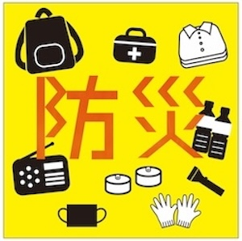
防災ピクト
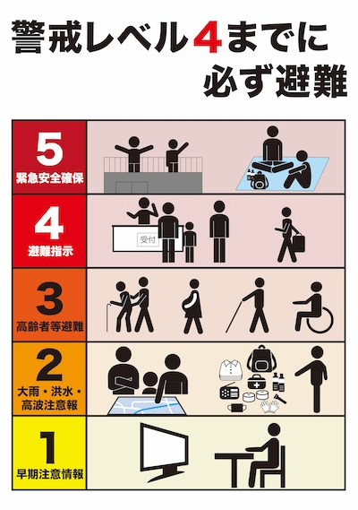
防災ポスター
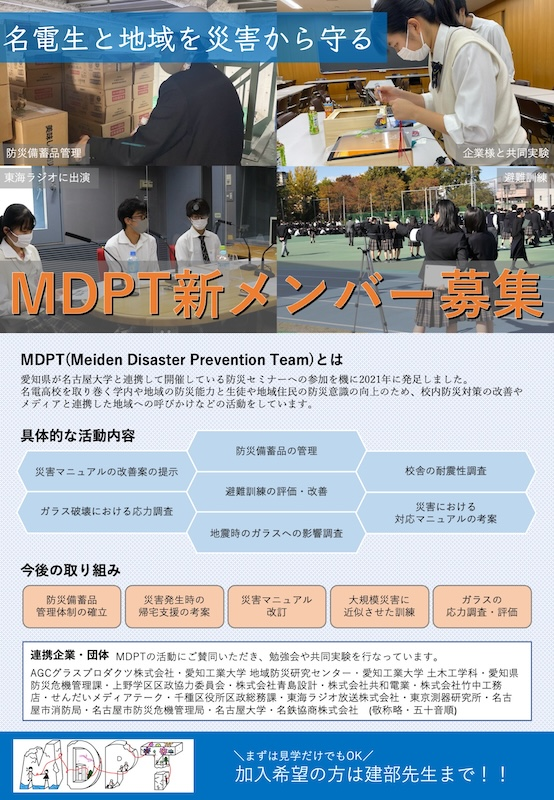
メンバー募集
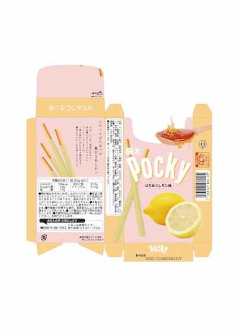
ポッキー はちみつレモン味
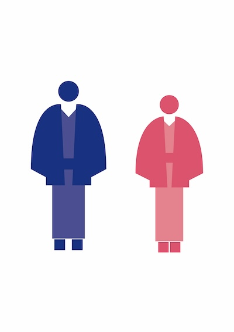
トイレのピクトグラム
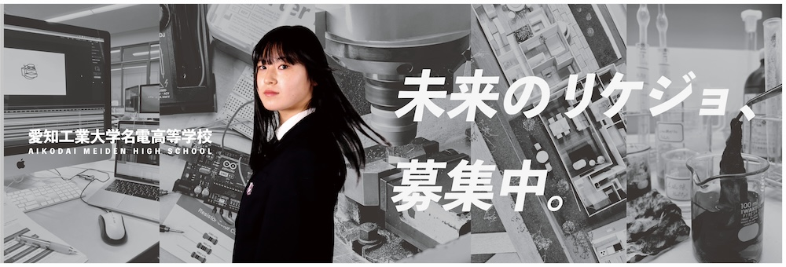
高校紹介
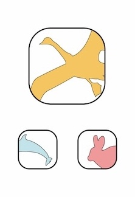
アニマルロゴ
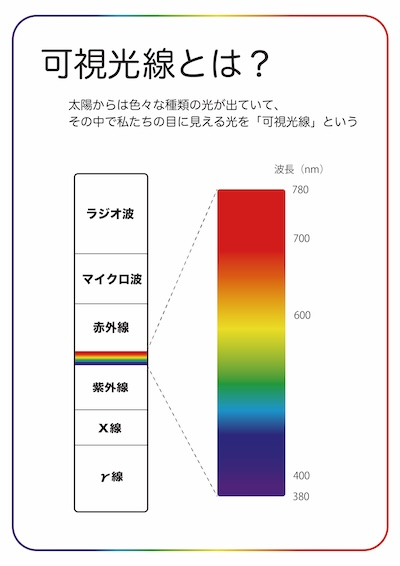
可視光線
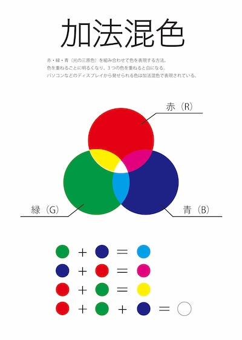
加法混色
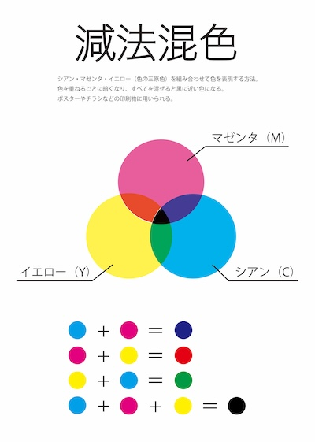
減法混色
花火
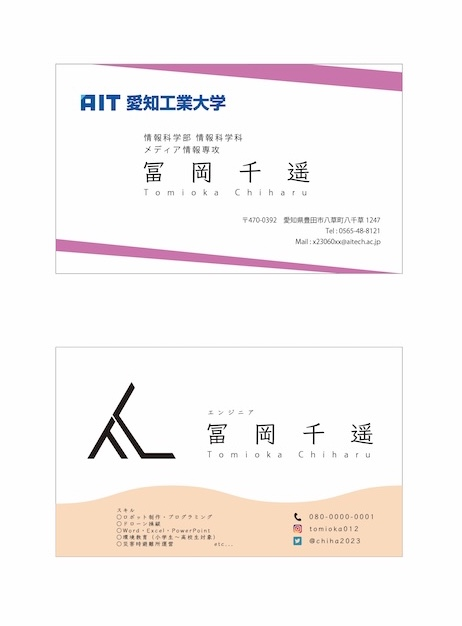
2023名刺
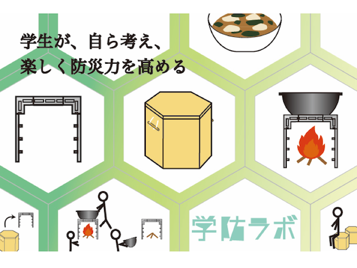
工科展2023
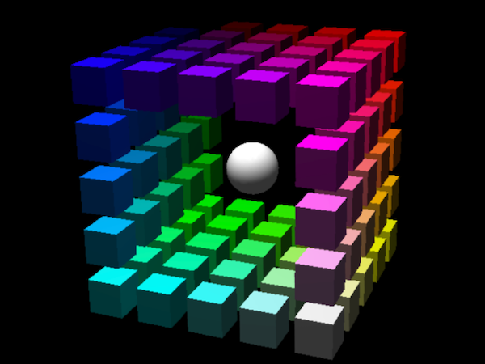
立体図形
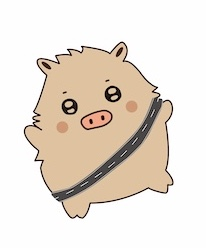
キャラクター
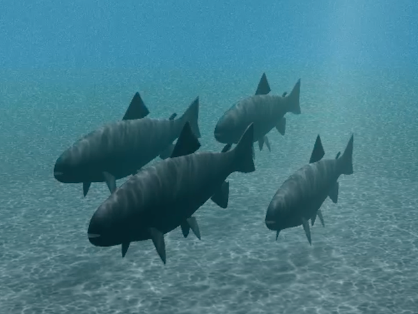
魚
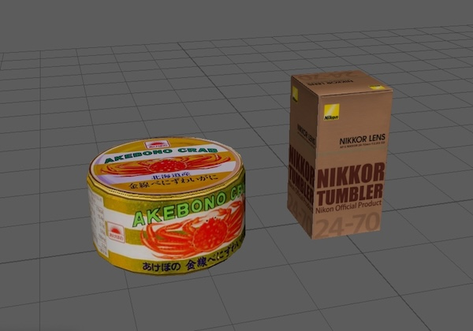
テクスチャマッピング
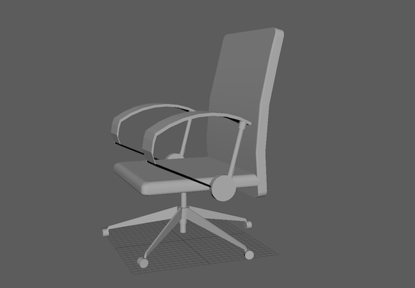
教室の椅子

教室
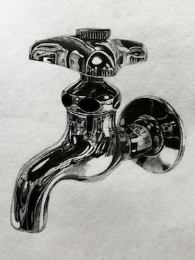
蛇口のデッサン
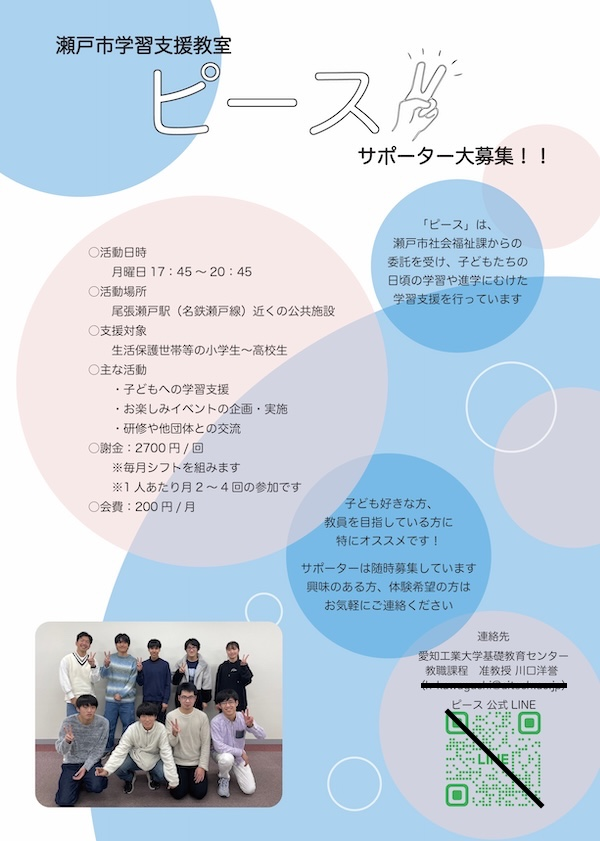
ボランティア募集チラシ
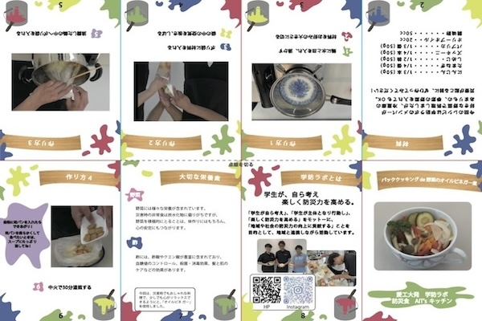
パタパタくん

パタパタくんの作り方
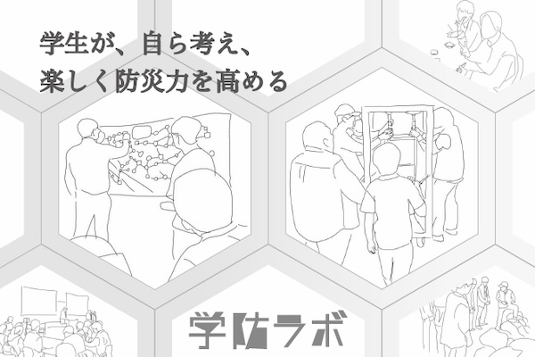
工科展2024
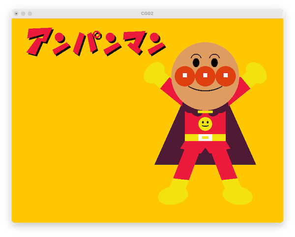
アンパンマン
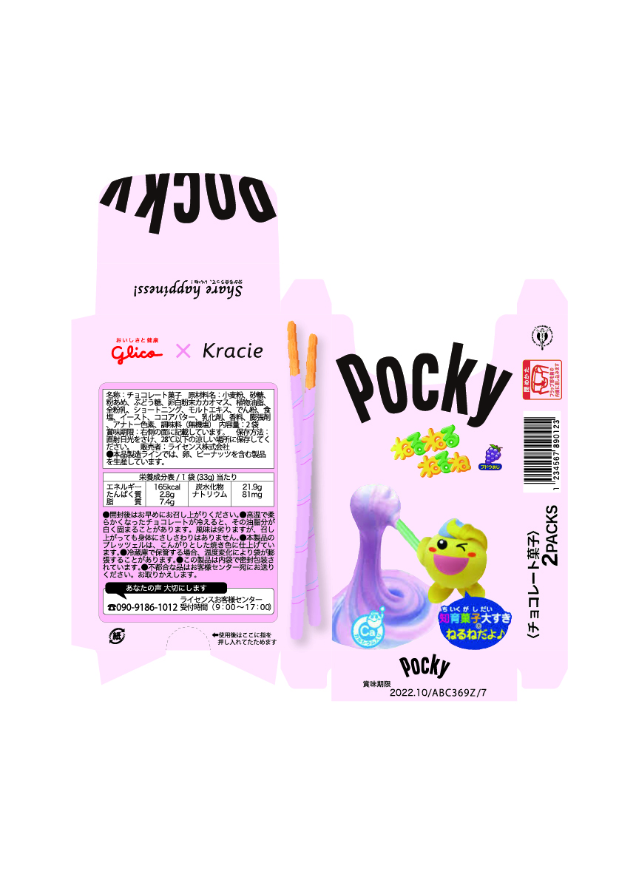
ポッキー ねるねるねるね味
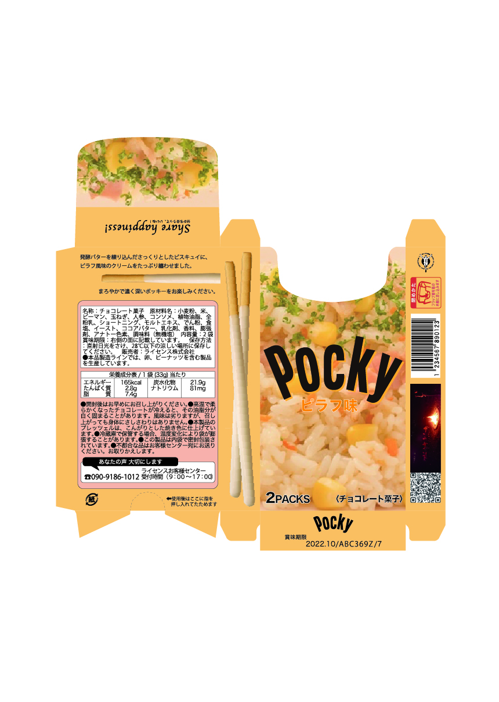
ポッキー ピラフ味
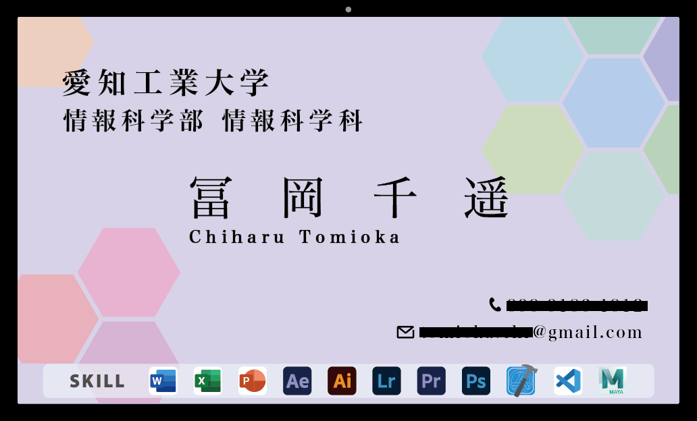
2024名刺
2025名刺

FLL CHALLENGE 2020-2021 ロボット
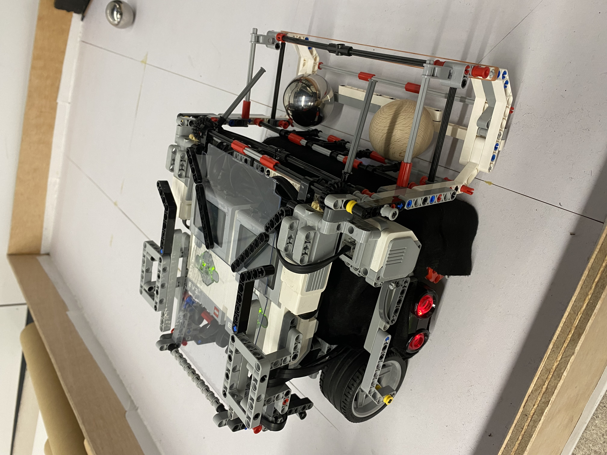
ロボカップジュニア全国大会 ロボット

手の赤みを取る
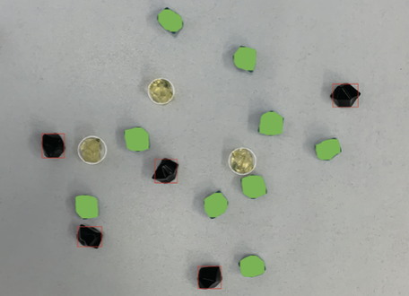
宝石の検出
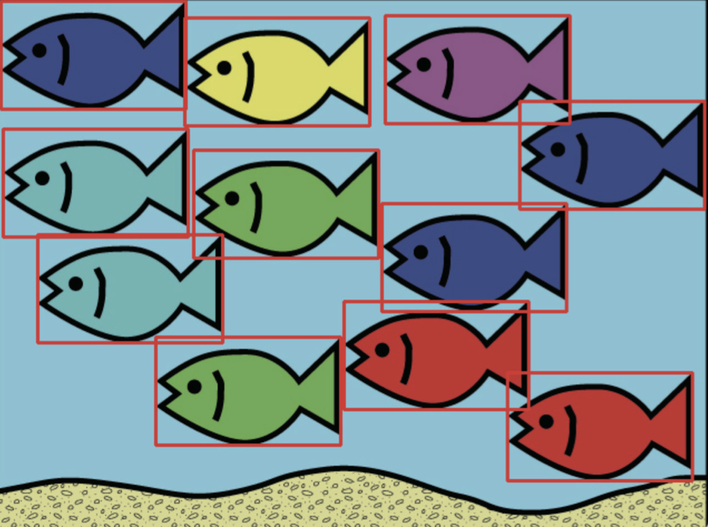